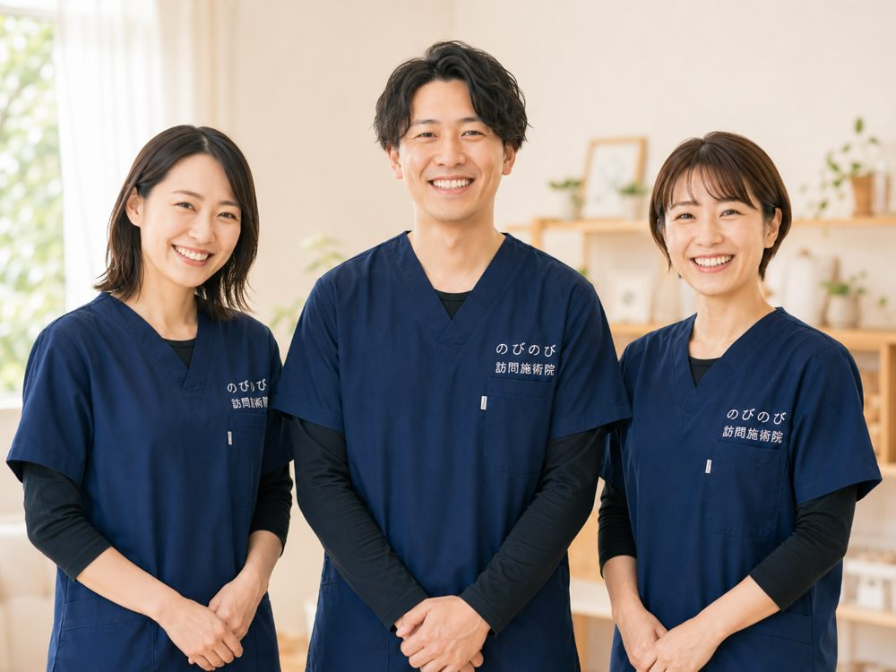
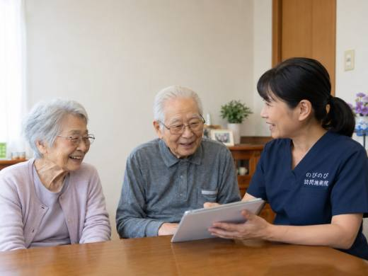
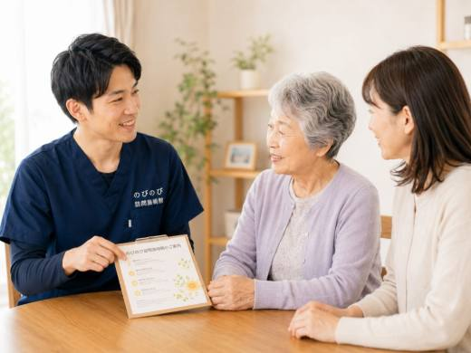
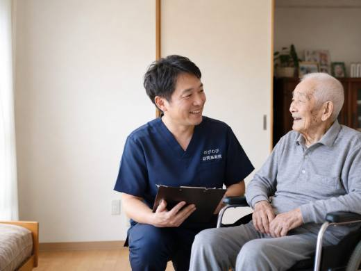

自宅に来てもらって体をみてもらう以上、どこに頼むかは家族にとって大きな判断です。訪問鍼灸マッサージは一度きりではなく、長く付き合っていくもの。それだけに、料金や資格、続けやすさまでを落ち着いて見比べておきたいところです。この記事では自院の宣伝ではなく、どの院を選ぶ場合でも役立つ確認の視点を、家族が確かめやすい順に整理してお伝えします。
要点から。確かめたいのは、国家資格を持つ施術者か、料金と保険の説明が始める前に明確か、必要以上に回数を重ねないか、体の様子や施術内容を家族やケアマネに共有してくれるか、衛生や時間・プライバシーへの配慮があるか、合わないときにやめやすいか、緊急時や医師との連携があるか、の七つです。訪問鍼灸マッサージは医師の同意書にもとづく医療保険で受けられ、1回の総額は3,950円、1割負担ならおよそ395円が目安。この費用は介護保険の限度額とは別枠です。効果には個人差があるため、断定的な説明をしない院を選ぶと安心です。
頼む前に、家族が確かめておきたいこと
自宅に上がって体をみてもらう相手を選ぶのは、家族にとってなかなか大きな判断です。訪問鍼灸マッサージは一度きりの買い物とは違い、週に何度か、何か月も付き合っていくことになります。そのため、最初のうちに見ておくべきところがいくつかあります。資格や料金といったはっきり確かめられる項目もあれば、実際に話してみないと分からない相性のようなものもあります。以下では、依頼する前や初回の相談のときに確認しておきたい点を、順番に挙げていきます。全部を完璧に満たす必要はありませんが、あいまいにされる項目が多いほど、慎重になったほうがよいと考えてください。
施術する人が国家資格を持っているか
訪問鍼灸マッサージを行えるのは、はり師・きゅう師・あん摩マッサージ指圧師という国家資格を持つ人だけです。専門の養成校で学び、国家試験に受かってはじめて名乗れる資格で、民間の短い講座を受けただけでできる仕事ではありません。確かめ方はそう難しくありません。「どの資格をお持ちですか」と尋ねればよいのです。きちんとした事業者なら、資格の種類も、実際にうかがう施術者が有資格者かどうかも、はっきり答えます。案内の担当者は資格を語るのに、実際に来る人が誰なのかあいまい、という場合は一度立ち止まったほうがよいでしょう。
医師の同意書のしくみを説明してくれるか
保険を使って施術を受けるには、医師の同意書が要ります。これは制度上の入り口で、医療者側のチェックを一度くぐったうえで施術が始まる、という仕組みになっています。良い事業者は、この同意書をどう取るのか、どの医師に書いてもらえばよいのか、更新はどうなるのかを、こちらが尋ねる前に説明してくれます。同意書の話をとばして「保険が使えます」とだけ言ってくる相手には、その中身を具体的に聞いてみてください。ちなみに、この保険は医療保険（療養費）の枠組みなので、要介護認定は必要ありません。介護保険の利用限度額とは別の枠として使えます。
料金を最初にはっきり示すか
費用の見通しが立たないまま始まるのは、それだけで不安のもとです。信頼できる事業者は、1回いくらか、そのうち自己負担がいくらかを、始める前に示します。参考までに、のびのびの場合は1回の施術が総額3,950円で、ここに医療保険が使えるため、実際に支払うのは自己負担ぶんだけです。目安として1割負担の方でおよそ395円。週2回のペースなら、1割負担で月におよそ3,160円ほどになります。金額の水準そのものは事業者ごとに大きく変わるものではありません。大事なのは、聞けば1回の総額と自己負担、月の見込みまで書いて示してくれるかどうかです。なお、機能訓練にあたる部分は鍼灸に加えて行うもので、別料金をいただくものではありません。同じ部位について医療保険のリハビリと鍼灸を同時に算定することはできない点も、あわせて説明があると安心です。
対応エリアと出張費の扱いが明確か
訪問である以上、どこまで来てくれるのかは大切な情報です。対応エリアをはっきり答えられること、そしてエリア内であれば出張費がどうなるのかを先に示せること。この二つを確かめておきましょう。エリア内は施術料に含まれて別途の出張費がかからないのか、それとも距離に応じて上乗せがあるのか。ここがあいまいだと、あとから予想外の請求につながりかねません。自宅の場所を伝えたときに、来られるか来られないかを正直に答えてくれるかどうかも、見ておきたいところです。遠方でも無理に「行けます」と言う事業者より、範囲の外なら外とはっきり伝える事業者のほうが、結局は信用できます。
できるだけ同じ施術者が続けて見てくれるか
毎回ちがう人が来ると、その日の体調やこれまでの経過を一から説明し直すことになります。なるべく同じ施術者が担当し、前回からの変化を見ながら続けてくれる体制かどうかは、聞いておく値打ちがあります。同じ人が通っていれば、少しこわばりが強い日、逆に楽そうな日といった小さな移り変わりに気づきやすくなります。担当がころころ変わる前提なのか、原則として決まった人がうかがうのか。この点を初回に確認しておくと、あとの安心感がずいぶん違います。
急変したときに主治医や家族と連携できるか
高齢の方や持病のある方が施術を受ける以上、体調が急に変わる場面は起こりえます。そのときに主治医へ連絡が回るのか、家族へどう伝わるのか、あらかじめ道筋があるかどうかを確かめておいてください。施術者が単独で判断して抱え込むのではなく、受診をすすめるべき場面ではきちんとそう言い、必要なら医療機関につなぐ。そうした連携の姿勢がある事業者は、ふだんの説明のなかでも「これは私たちの範囲ではないので医師に」と線を引いてくれます。始める前に知っておきたい注意点は、訪問鍼灸マッサージのデメリット・注意点にもまとめています。
効果を断定せず、できないことも正直に言うか
最後に、いちばん見分けの手がかりになる点です。鍼やお灸、手技による施術は、病気そのものを治すものではありません。保険の対象になるのも、神経痛・リウマチ・頸肩腕症候群・五十肩・腰痛症・頸椎捻挫後遺症といった、痛みやこわばりに関わる状態が中心です。あらわれ方には個人差があり、受けてみて合わなければやめて構いません。ですから「必ず治る」「これで安心」と言い切る相手には、むしろ用心したほうがよいのです。契約を今すぐ迫ってくる、追加の健康商品をすすめてくる。そんな様子が見えたら、いったん保留にして構いません。良い事業者ほど、できることは誠実に引き受ける代わりに、できないことも隠さず伝えます。効果をめぐる正直な話は、効果はある？怪しくない？への誠実な回答でもう少しくわしく書いています。迷ったら、その事業者がこちらの迷いを急かすかどうかを見てください。まっとうな施術なら、急かす理由はないはずです。
「治る」と書けないのには、理由があります
前の項目とつながる話です。鍼灸やマッサージの施術所が広告に出してよいことは、あん摩マツサージ指圧師、はり師、きゆう師等に関する法律で決められています。厚生労働省がガイドラインも出していて、そこに何を出してよくて、何が認められないかが並んでいます。
出してよいとされているのは、施術者の氏名と国家資格を持っている旨、施術所の名称・所在地・電話番号、施術日時、開設の届出をしている旨、医療保険の療養費の取扱いがある旨（医師の同意が必要なことをあわせて示すこと）、予約制かどうか、休日や夜間の対応、出張施術の有無、駐車設備といった事実です。
反対に認められないのが、効果や効能をうたうこと。「慢性病の根本治療」「難病治療の専門」といった書き方です。施術者の技能や施術方法も広告できません。「痛くない鍼」「○○流」のような表現がこれにあたります。体験談や、加工した施術前後の写真、「県内で唯一」のような他院と比べて優れているとする表現も認められていません。
ですから、当院が「これで治ります」と書かないのは、言葉を濁しているからではなく、そう書けない決まりだからです。逆に、断定的な効果や体験談が前面に出ているところを見かけたら、その院が制度をどう扱っているかを見る手がかりの一つになります。判断の材料として、頭の隅に置いておいてください。
訪問先で毎回していること
施術の強さは、そのつどご本人に確かめながら決めています。「痛いけど気持ちいい」「これぐらいの方が気持ちいい」と、はっきり好みを伝えてくださる方もいれば、はじめてで加減がわからないという方もいます。前回が少しきつかったようだと感じれば、次は弱めから入る。そうした調整を毎回しています。訪問施術院を選ぶときは、こうした確認をその場でしてくれるかどうかも、見ていただくとよいところだと思います。
よくある質問
ホームページに「治る」と書いていない院は、自信がないということですか？
いいえ、逆です。鍼灸やマッサージの施術所が広告に出せることは法律とガイドラインで決められていて、効果や効能をうたうこと、体験談を載せること、施術前後の写真を出すこと、他院より優れているとする表現は認められていません。断定しないのはルールを守っているためで、できることとできないことを正直に伝える院ほど、そこは慎重に書きます。
訪問鍼灸マッサージはどう選べばいいですか？
国家資格を持つ施術者か、料金と保険の説明が始める前に明確か、必要以上に回数を重ねないか、家族やケアマネと情報を共有してくれるか、合わないときにやめやすいか、を軸に見比べると安心です。一つに絞らず、いくつかを合わせて眺めて判断してください。
資格はどう確認すればいいですか？
はり師・きゅう師の国家資格を持つ施術者がうかがうかを、そのまま尋ねてみてください。信頼できる院なら、この問いに困ることはなく、経験も含めて分かる言葉で答えてくれます。答えがあいまいなときは、いったん立ち止まって考えるとよいでしょう。
料金が不透明な事業者に注意が必要ですか？
はい。「保険が使える」と言いながら高額な実費を上乗せしたり、内訳を示さなかったりする例には注意が必要です。1回の負担、月の合計、それ以外にかかる費用の三点を紙や画面で示してもらい、納得してから始めましょう。
費用はどのくらいかかりますか？
1回の総額は3,950円で、自己負担は1割の方でおよそ395円が目安です。別途の出張費はかからず、エリア内はどこでも同額。週1回ならひと月およそ1,580円（1割）が目安です。効果の感じ方には個人差があります。
介護保険の限度額に影響しますか？
影響しません。訪問鍼灸マッサージの費用は医療保険で計算し、介護保険の区分支給限度額とは別枠です。そのため、デイサービスやヘルパーの利用枠とは別に受けられます。すでに介護サービスを使っている方も併用できます。
同意書の手続きが不安です。手伝ってもらえますか？
保険を使うには医師の同意書が必要ですが、用紙の用意や医療機関とのやりとりの段取りまで手伝ってくれる院を選べば負担が軽くなります。のびのびでも手続きを当院で進めます。何から始めればよいか分からない段階でも相談できます。
複数の院を比べてから決めても大丈夫ですか？
もちろんです。大切な家族のことですから、納得のいくまで比べて選んでください。相談だけ、見積もりだけの問い合わせを歓迎している院がほとんどです。急かされることなく話を聞けるかどうかも、比べる際の判断材料になります。
今の院から変えることはできますか？
できます。合わないと感じたら無理に続ける必要はありません。今の状況を伝えれば、切り替えの進め方も含めて案内してもらえます。本人が安心して受けられることを第一に、遠慮なく相談してください。

訪問鍼灸マッサージのデメリット・注意点｜施術者が正直に、対策とあわせてお伝えします
続きを読む
訪問鍼灸マッサージと出張マッサージ・リラクゼーションはどう違う？国家資格と保険で見分ける
続きを読む
訪問鍼灸マッサージの施術者は国家資格を持つ？はり師・きゅう師の資格をわかりやすく
続きを読む
訪問鍼灸は効果があるの？怪しくない？施術者が正直にお答えします
続きを読む
高血圧のある方の肩こり・不眠と体のケア｜注意点つき・自宅で受ける訪問鍼灸マッサージ
続きを読む